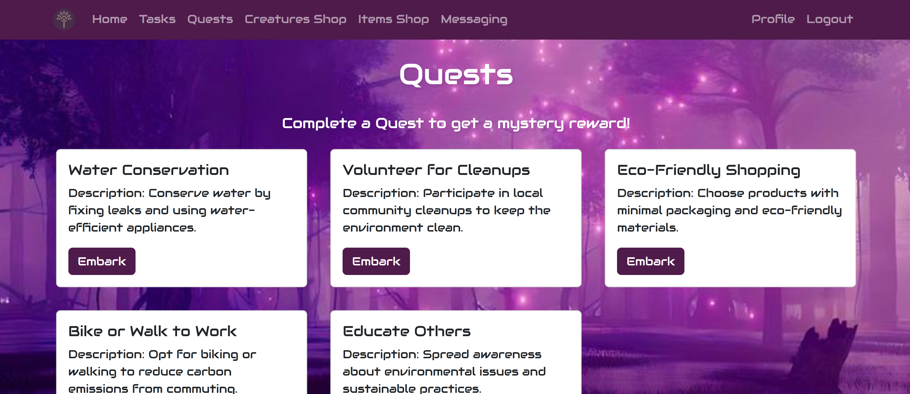
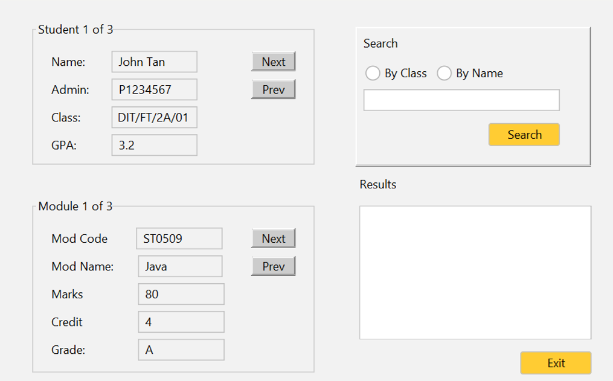
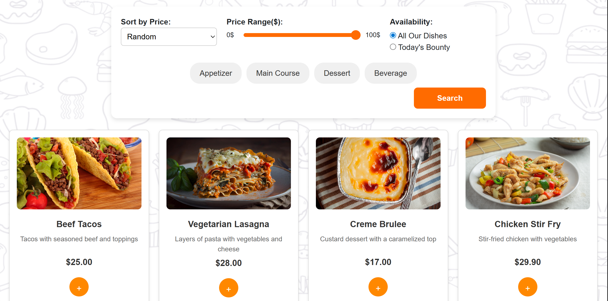
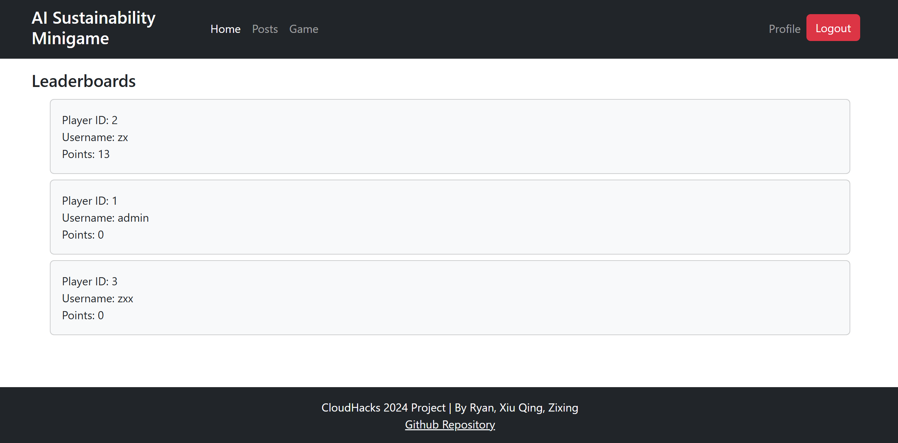
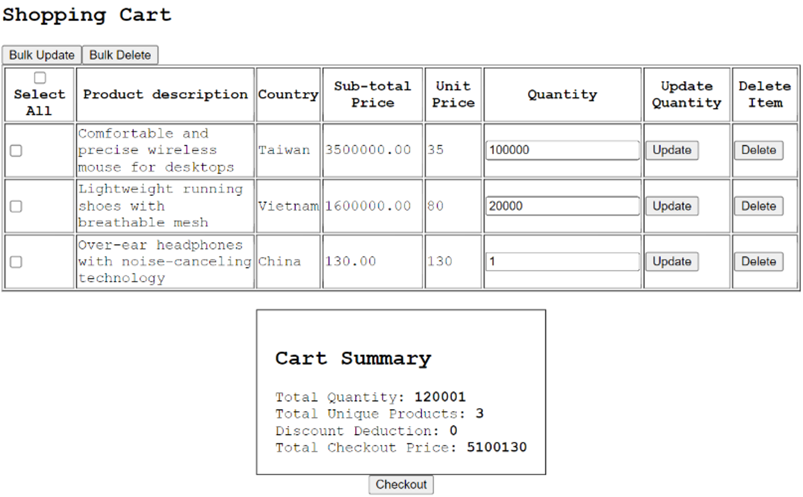
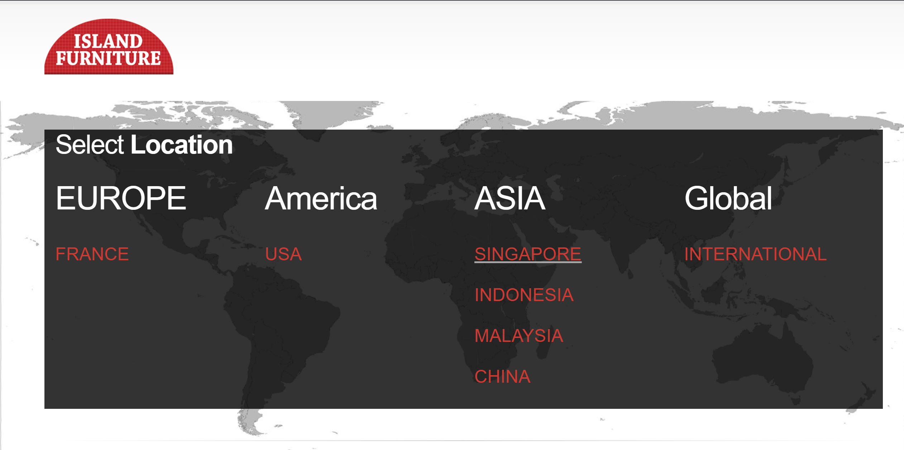

Project Title
Project description will appear here.

Gamified Sustainability Task Tracker
I built a full-stack web application that gamifies eco-friendly habits through interactive challenges and reward systems.

Mini Student System
I created a Java Swing application to manage student information with search and CRUD functionality.

Restaurant Management System
A full-stack web application with CI/CD pipeline, featuring admin menu management, real-time delivery tracking, and automated testing.

Eco Garden - AI Powered Sustainability Minigame
An AI-powered sustainability minigame built for CloudHacks 2024 hackathon. Features user authentication, leaderboards, posts, and an interactive game powered by Google Gemini AI.

E-Commerce Database & Web Application
A full-stack e-commerce system with emphasis on database design, performance optimisation, and transaction management. Features cart management, checkout processing, promotions, and order tracking.

IslandFurniture Web Portal
An agile software engineering project enhancing an e-commerce web portal. Applied SCRUM methodology, requirements gathering, system design, testing, and bug fixing in a team-based environment.